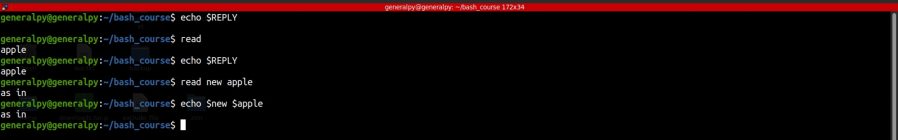
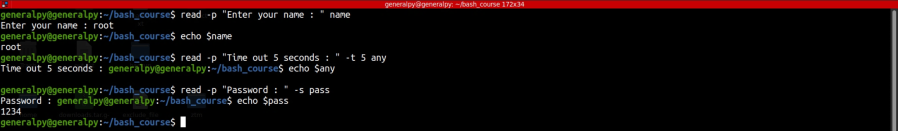

Read command is used to take input from user interactively during running the script.
By defualt when read is encountered, it pauses and waits for user input and when input is provided, it is stored in a variable called REPLY.
We can also store values in different variables and can pass multiple variables to single read.
read [options] [variables]
-p option can be used to provide prompt to user when using read.
-t can be used to specify a timeout.When timeout is set, script will pass for that amount of second before moving forward in script even if input is not provided.
-s is used to activate secret mode which will accept input without echoing it on screen, useful for inputting passwords.
